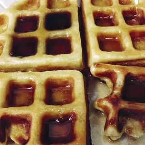

Classic Waffles

Delicious Classic Waffles
You should definitely have Classic Waffles in your mornig breakfast recipie list!.
Nothing taste better than freshly coocked waffles in the morning.
Ingredients
- 2 cups all-purpose flour
- 1 teaspoon salt
- 4 teaspoon baking powder
- 2 tablespoons white sugar
- 2 eggs
- 11/2 cups warm milk
- 1/3 cup butter, melted
- 1/2 teaspoon vanila extract
Steps
- In a large bowl, mix together flour, salt, baking powder and sugar; set aside. Preheat waffle iron to desired temperature.
- In a separate bowl, beat the eggs. Stir in the milk, butter and vanilla. Pour the milk mixture into the flour mixture; beat until blended.
- Ladle the batter into a preheated waffle iron. Cook the waffles until golden and crisp. Serve immediately.